Iluminación
La luz es el principio de la fotografía y del cine, sin luz no podemos expresar lo que queramos
Hay dos Tipos de Luz
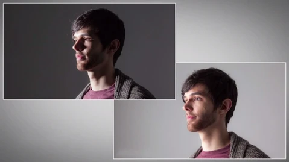
- Difusa
Hay algún tipo de filtro y hay diferentes tipos de filtros difusores:
- Disfusor,
- Día nublado
- Luz rebotado
- Reflectores
- Dura
Es cuando entre la fuente de luz y nuestro sujeto no hay ningún tipo de filtro, provocando unas sombras duras: un día soleaddo, un foco directo, un flash direct a la cara, una antorcha, una luz de vela
La exposición de la luz
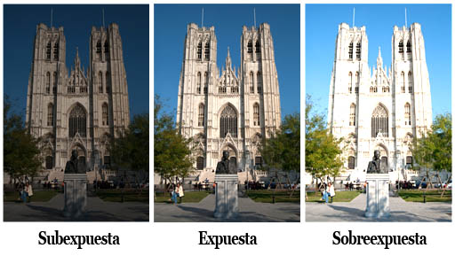
Tenemos que prestar atención a la exposición correcta en la exposición, es decir que no hayan sombras muy duras ni blancos quemados.
Cuando tenemos una fotografía subexpuesta se le suele llamar clave baja en la parte oscura de la foto no vamos a ver detalles sino que se mezcla con el fondo.
Una foto sobreexpueta Clave alta pasa todo lo contrario, donde hay luz no se van a ver detalles.
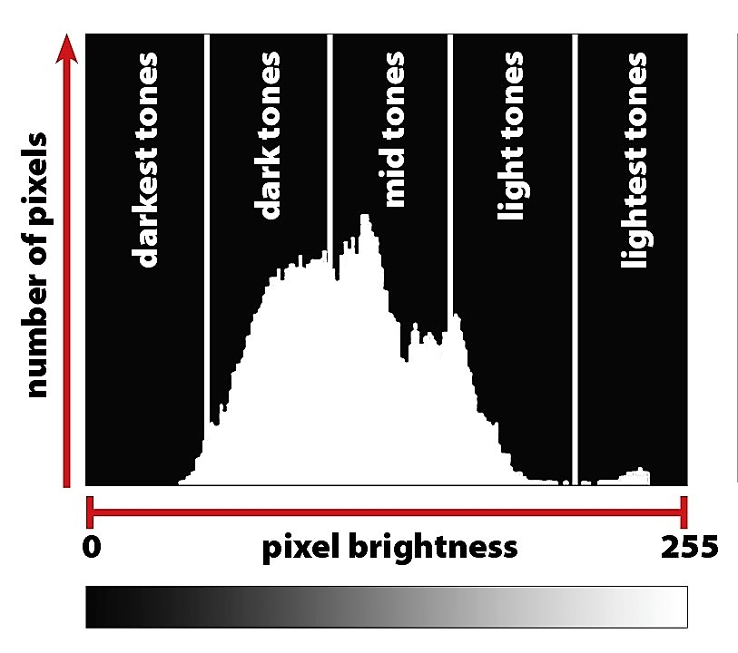
La temperatura
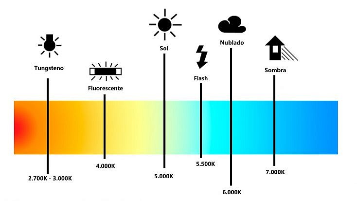
Este es otro de los puntos importnates de la luz es la temperatura, el brillo, la potencia, la distancia y el tamaño, algunas podrás controlarla pero hay otras que no puedes controlar como el sol, la luna, las luces de la ciudad.
Cuanto enos grados kelvin todo lo se le llama la luz de tungsteno y entre 3000 y 4.000 sería lo normal y ya de 6.000 para arriba es la luz fria.
Distancia de la luz
Entre más distancia las sombras desaparecen y difumina la luz
Tipos de luz dentro del cine
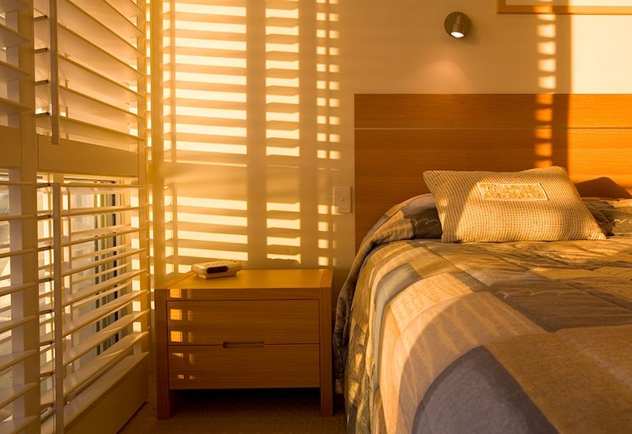
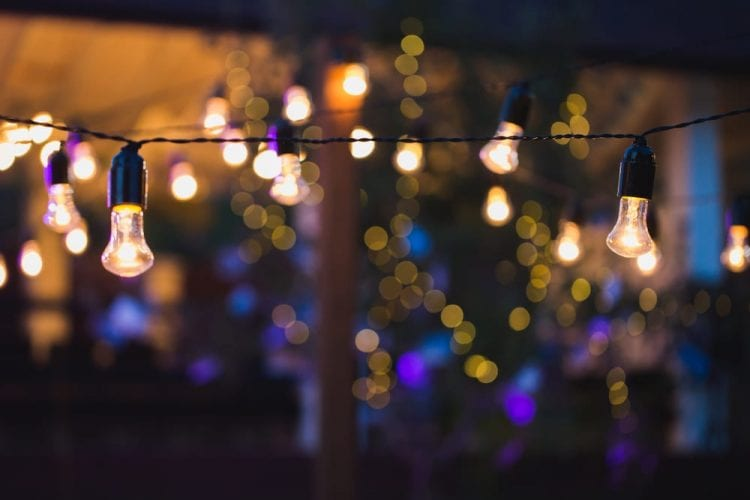
-
luz ambiental
servirá para iluminar nuestro sed de rodaje, natural o artificial, para ambientar nuestro sed de rodaje, pero esa fuente de luz no saldrá en pantalla, estará fuera de campo.
-
luz estructural
Ilumina nuestro sed de rodaje pero nuestra luz está fuera de campo
Primera fotografía de la historia
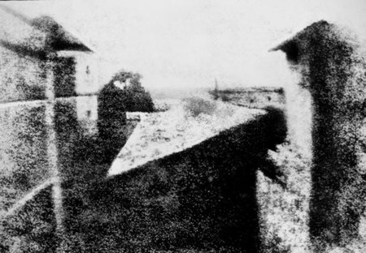
Primero rollo
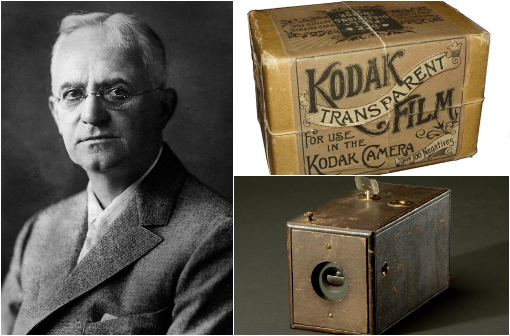
Esquemas de iluminación
Iluminación total
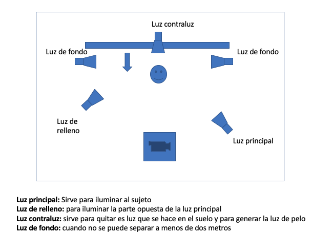
Luz frontal
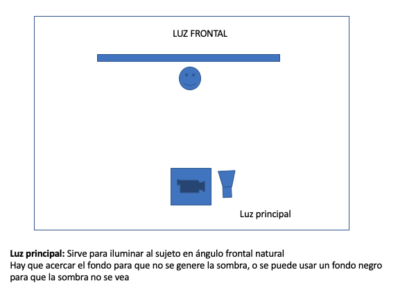
Luz semilateral
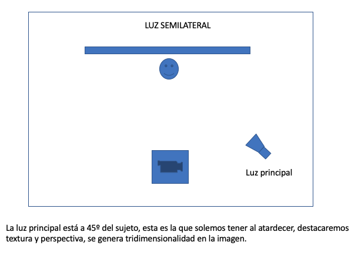
Luz lateral
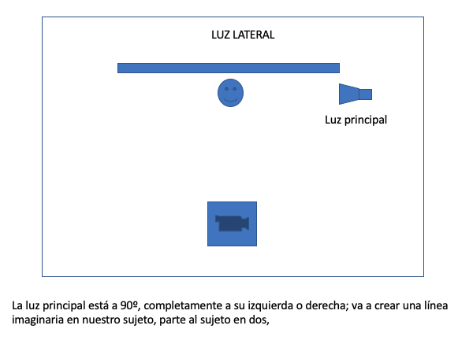
Luz lateral doble
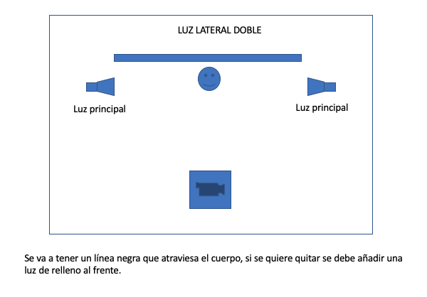
Semi-contraluz
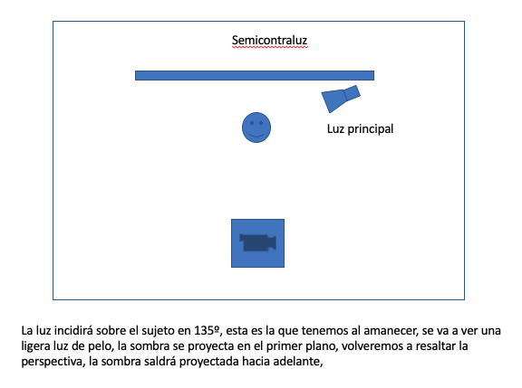
Contraluz
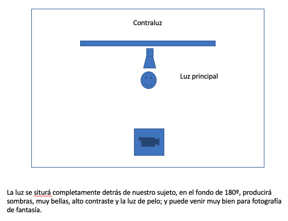
Luz cenital
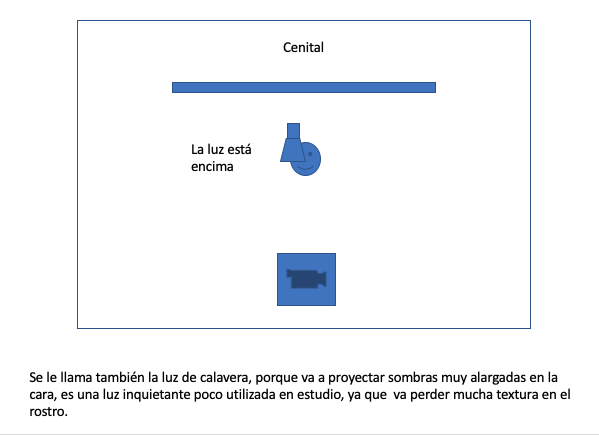
Butterfly
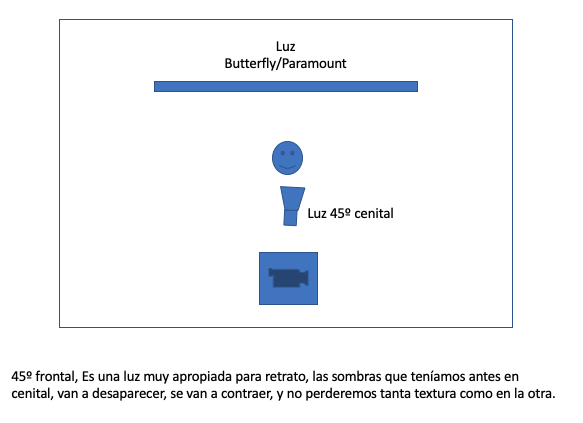
Luz Rembrandt
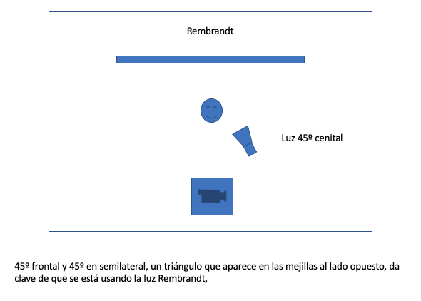
Clam Shell 1
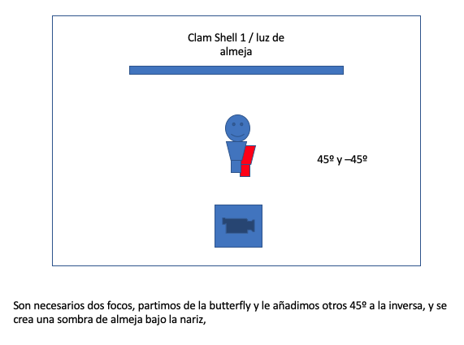
Clam shell 2
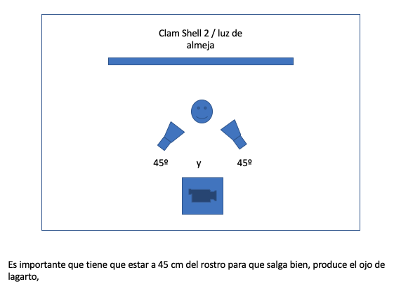
Luz calavera
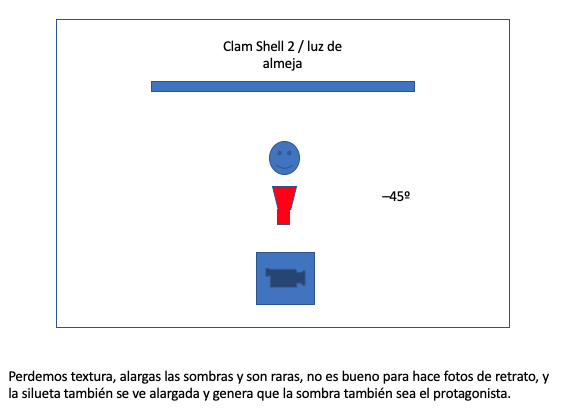
Mezclar varios esquemas de iluminación
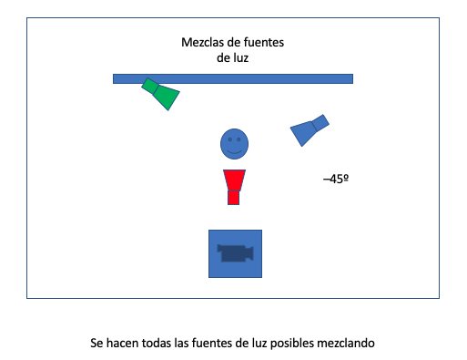
La fotografía de retrato es la más común entre la más extendida entre entendidos y aficionados, selfie (impasible) (intimista), en estudio (una sesión profesional) hay que tener un sesión 0 antes de tener una fotografía de retrato, su forma de trabajar, hobbies temperamento, forma de vestir, y la luz, como norma general hay que retratar la escencia humana del modelo, los ojos siempre van a ser los protagonistas siempre van a estar en el enfoque, se pueden seguir la regla de los tercios, referente a la luz; referente a la composición
Pasos a seguir
- Por donde empezar: amigos, familiares y por encargo, y tratar de conseguir un feedback, si se es en un siito neutral si es personas que no se conocen,
- Si utilizaís reflex el mejor objetivo es el 50 mm, porque es lo más parcido a la visión humana cuando
- La importancia de la luz, tratar de utilizar la natural y se se utiliza la natura que parezca natural, esa luz tiene que transmitir la escencia del modelo
- Separar dos metros en estudio y si no se tiene un fondo bonito separar al modelo, 10 metros,
- También puedes "robar" fotos sin naturales
- Si es un fondo natura se puede hacer que el modelo interactúe con él, apoyada en un puerta, en un cera
- Probar el retrato en movimiento
- Intentar explorar ángulos distintos
- Enfocar simpre a los ojos el 80% de la información va a estar siempre ahí
- Romper las reglas, rompe el espacio negativo, corta la cabeza, ajustate a las reglas, descentrado,
- Acercarse y alejarse, explorar la posición
- Desde un plano americano hasta el plano
variaciones a la fotografía de retrato
- Selfie:
- El retrat animal: todo lo hablado antes pero aplicado a los animales
- Fotografía de desnudo: tiene por objetivo fotografia el cuerpo humano, sin sobrepasar la delgada línea que la separa de la fotografía erótica, es un variantes de la fotografía de retrato juntada con artístico ya que la luz debe demostrar y contar el cuerpo, ha sufrido muchas etapas, desde la historia del arte se ha retratado el cuerpo humano: griegos: las venus, renacimiento: la maja desnuda, y todo esto nace de ahí, y la luz nace de ahí. SUJERIR antes de mostrar
- El Autoretrato: nace con la fotografía artística con la fotogría de retrato para representarse ellos mismos, la finalidad es que se vea reflejada la personalidad del fotografo, se pueden usar complementos a la cara, o se tatuan o escriben en las manos.
- Bodoir: el protagonista es la lencería, mejor hacerlo con luz natural, donde va se ve más en dormitorio, aquí la luces y sombras cobran mucho sentido, teine objetivo de venta, las modelos no están mirando a cámara porque el protagonista debe ser la ropa
- La fotografía de retrato al estilo Platon Antoniou: hace fotografías con un gran angulas casi ojo de pez, tratando de conseguir la triangulación con una piramide,
1/125
f. 22
100 iso
1/180
f. 16
iso 100
 home
home